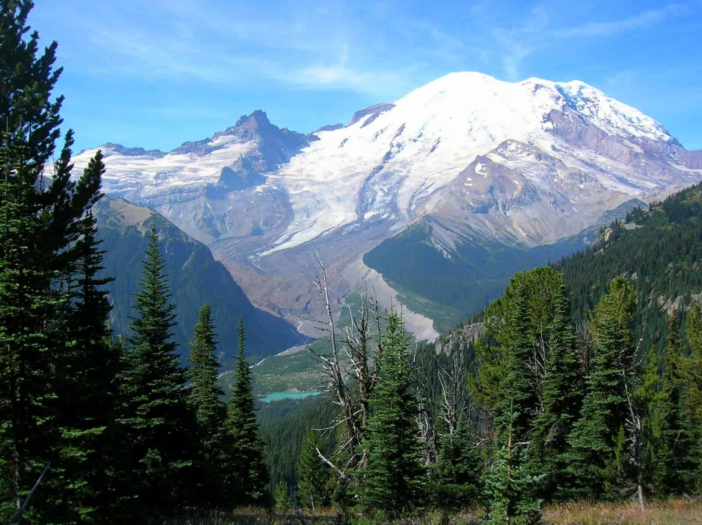

The State of Washington is a hot spot for travelers, wayfarers,
and even just people looking for somewhere to go for the weekend.
With its numerous cities and National Parks, traveling to this state is never a bad idea.
Washington has hundreds of wonderful and exciting places of interest,
and below are a few of the most well known travel hotspots.
Pike Place Market
Pike Place Market is a very famous location among tourists and locals.
Home to many reputable shops, stores, and restaurants,
it's hard not to find something you'll like. Among its most notable spots are
the Original Starbucks, the Seattle Aquarium, and the Seattle Great Wheel.
with so much to see and do in one place, it's no wonder why thousands of people make their way through its streets daily.
Mount Rainier

Mount Rainier is one of the most popular places to visit in Washington. Known for its trails and snowy
summit, people of all types flock to the mountain for all sorts of activities.
In the wintertime, snowboarders and skiiers can spend their time on the slopes
that the mountain is famous for. There are also areas to sled and just have fun in the snow as well.
Throughout the year, the multitude of Mount Rainier's trails are available for tourists.
With so many activities open for people to enjoy, it is a very popular place to go.
Seattle Space Needle
When people think of Washington, they think of the Seattle Space Needle. As an iconic monument to the state,
it stands tall as one of the most well renowned locations for people to travel to.
Visitors can observe the beautiful view of the city of Seattle and beyond.
Inside is also a famous restaurant, where people who dine can view the wonderful sights
and have a delicious meal.